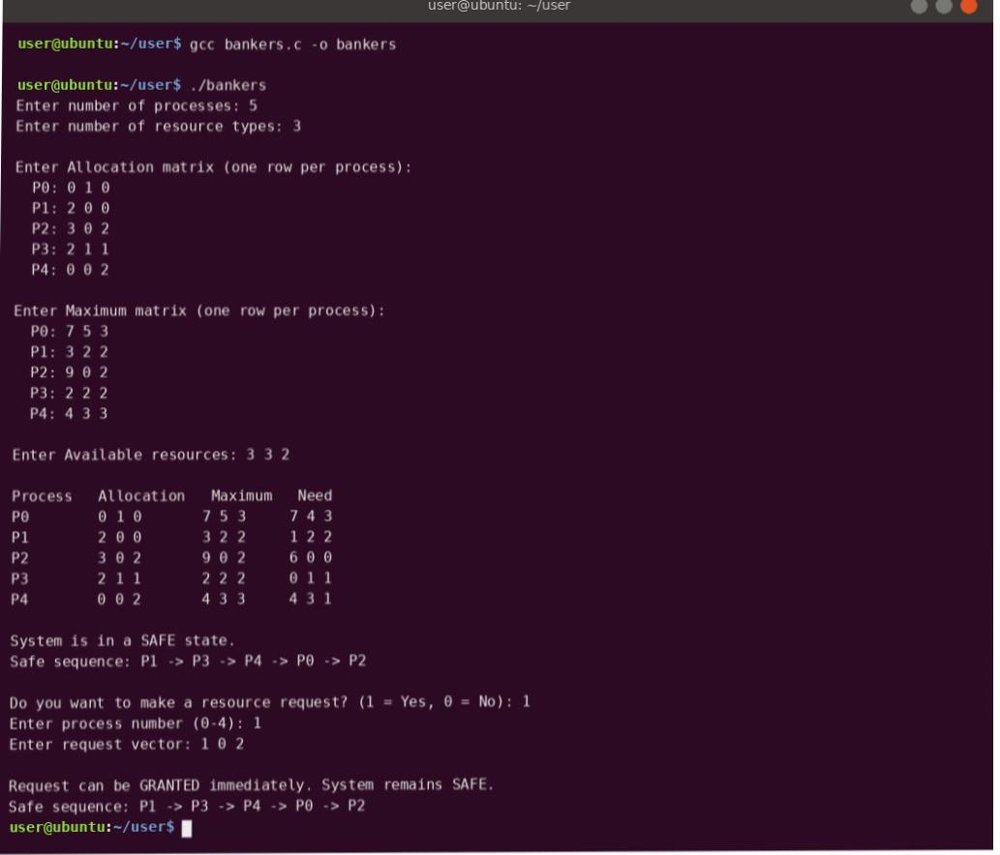

Practical 5
Banker's Algorithm
Theory
The Banker's Algorithm is a deadlock avoidance method. Before granting a resource request, the system checks whether the system will still be in a safe state afterwards – just as a banker never lends money if it could not satisfy all customers' maximum needs.
Data structures (n processes, m resource types)
- Available – number of free instances of each resource type.
- Max – the maximum each process may ever request.
- Allocation – what each process currently holds.
- Need = Max − Allocation – what each process may still request.
Key definitions
- Safe state – there is at least one order in which all processes can finish, each getting the resources it needs.
- Safe sequence – that order of processes, e.g. P1 → P3 → P4 → P0 → P2.
- Unsafe state – no safe sequence exists. It does not mean deadlock has happened, but deadlock is possible.
Safety algorithm (is_safe)
- Set
Work = Availableand mark every process unfinished. - Find an unfinished process whose
Need ≤ Work. - Assume it finishes and returns its resources:
Work = Work + Allocation; mark it finished and add it to the sequence. - Repeat. If all processes finish, the state is safe; if none can be found, it is unsafe.
Resource-request algorithm
- If
Request > Need→ error (the process exceeded its maximum claim). - If
Request > Available→ the process must wait. - Otherwise pretend to allocate: reduce Available and Need, increase Allocation.
- Run the safety algorithm. If safe, grant the request; if unsafe, undo the change and deny it.
Code
/* Practical 5 : Banker's Algorithm (deadlock avoidance) */
#include <stdio.h>
#define MAXP 10
#define MAXR 10
int n, m;
int alloc[MAXP][MAXR], maxm[MAXP][MAXR], need[MAXP][MAXR], avail[MAXR];
int is_safe(int seq[]) {
int work[MAXR], finish[MAXP] = {0}, count = 0;
for (int j = 0; j < m; j++) work[j] = avail[j];
while (count < n) {
int found = 0;
for (int i = 0; i < n; i++) {
if (finish[i]) continue;
int ok = 1;
for (int j = 0; j < m; j++)
if (need[i][j] > work[j]) { ok = 0; break; }
if (ok) {
for (int j = 0; j < m; j++) work[j] += alloc[i][j];
seq[count++] = i;
finish[i] = 1;
found = 1;
}
}
if (!found) return 0;
}
return 1;
}
void print_seq(int seq[]) {
printf("Safe sequence: ");
for (int i = 0; i < n; i++) printf("P%d%s", seq[i], i < n - 1 ? " -> " : "\n");
}
int main(void) {
int seq[MAXP];
printf("Enter number of processes: ");
scanf("%d", &n);
printf("Enter number of resource types: ");
scanf("%d", &m);
printf("\nEnter Allocation matrix (one row per process):\n");
for (int i = 0; i < n; i++) {
printf(" P%d: ", i);
for (int j = 0; j < m; j++) scanf("%d", &alloc[i][j]);
}
printf("\nEnter Maximum matrix (one row per process):\n");
for (int i = 0; i < n; i++) {
printf(" P%d: ", i);
for (int j = 0; j < m; j++) scanf("%d", &maxm[i][j]);
}
printf("\nEnter Available resources: ");
for (int j = 0; j < m; j++) scanf("%d", &avail[j]);
for (int i = 0; i < n; i++)
for (int j = 0; j < m; j++)
need[i][j] = maxm[i][j] - alloc[i][j];
printf("\nProcess Allocation Maximum Need\n");
for (int i = 0; i < n; i++) {
printf("P%d ", i);
for (int j = 0; j < m; j++) printf("%d ", alloc[i][j]);
printf(" ");
for (int j = 0; j < m; j++) printf("%d ", maxm[i][j]);
printf(" ");
for (int j = 0; j < m; j++) printf("%d ", need[i][j]);
printf("\n");
}
if (is_safe(seq)) { printf("\nSystem is in a SAFE state.\n"); print_seq(seq); }
else { printf("\nSystem is in an UNSAFE state (deadlock possible).\n"); return 0; }
int choice;
printf("\nDo you want to make a resource request? (1 = Yes, 0 = No): ");
scanf("%d", &choice);
if (choice) {
int p, req[MAXR];
printf("Enter process number (0-%d): ", n - 1);
scanf("%d", &p);
printf("Enter request vector: ");
for (int j = 0; j < m; j++) scanf("%d", &req[j]);
for (int j = 0; j < m; j++)
if (req[j] > need[p][j]) { printf("Error: process P%d exceeded its maximum claim.\n", p); return 0; }
for (int j = 0; j < m; j++)
if (req[j] > avail[j]) { printf("Resources not available. P%d must wait.\n", p); return 0; }
for (int j = 0; j < m; j++) { avail[j] -= req[j]; alloc[p][j] += req[j]; need[p][j] -= req[j]; }
if (is_safe(seq)) {
printf("\nRequest can be GRANTED immediately. System remains SAFE.\n");
print_seq(seq);
} else {
for (int j = 0; j < m; j++) { avail[j] += req[j]; alloc[p][j] -= req[j]; need[p][j] += req[j]; }
printf("\nRequest DENIED. Granting it would lead to an UNSAFE state.\n");
}
}
return 0;
}
Output

Tap or click the screenshot to open it full size.